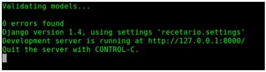
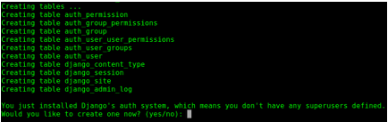
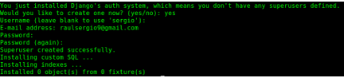

To create a new project simple open the terminal into the desired directory and type
django-admin.py startproject projName
This instruction will create two directories with the name of the project and five files:
manage.py
projName [Dir]
__init__.py
settings.py
urls.py
wsgi.py
Running the project
To run the project, and check over if it is working we have to type:
python manage.py runserver
In terminal you must to see:

python manage.py runserver
Now open the browser an go to http://127.0.0.1:8000/. Your project initial page will be loaded.
If for some reason the port 8000 is being used by another application we can change it from the launch, for example with:
python manage.py runserver 8888
we manually select the port 8888, and the address in the browser should be http://127.0.0.1:8888/
Every project needs applications where we can manage the models and views. A single project may have more than one application.
Settings.py
Una parte muy importante del proyecto es el archivo settings.py, este archivo permite configurar la conexión a la base de datos, la zona horaria, el idioma, los directorios principales del proyecto, las aplicaciones del proyecto, entre otras cosas.
Aprender a configurar este archivo permite optimizar el funcionamiento del proyecto, las instrucciones principales a configurar:
Codificación de caracteres
Para manejar eficientemente los caracteres especiales del idioma en django debemos agregar la siguiente línea al archivo settings.py:
#encoding:utf-8
Ruta del proyecto
Si no se configura la ruta del proyecto, cada vez que se cambia de directorio o de PC, se tendrá que cambiar las rutas de las plantillas, archivos estáticos y directorio de subida de contenido de los usuarios.
Esta configuracion permitirá lanzar la aplicación desde cualquier directorio y mover el proyecto a cualquier computador con Django instalado.
# Identificando la ruta del proyecto
import os
#BASE_DIR = os.path.dirname(os.path.realpath(__file__))
BASE_DIR = os.path.dirname(os.path.dirname(__file__))
Administradores
Cuando Django tiene la opción de DEBUG=False, las notificaciones de error de código deben ser enviadas vía correo electrónico a los administradores, junto con
los detalles completos del error. Para poner los datos de los administradores debemos buscar la siguiente porción:
Y modificarla para que quede con los nombres de los administradores en forma de tupla.
Configuración de la base de datos
También podemos configurar la conexión a la base de datos según nuestras necesidades, Django soporta de manera predeterminada la conexión con postgresql, mysql, sqlite3 y oracle.
Debemos buscar la siguiente sección del archivo:
DATABASES = {
'default': {
'ENGINE': 'django.db.backends.', # Add 'postgresql_psycopg2', 'mysql', 'sqlite3' or 'oracle'.
'NAME': '', # Or path to database file if using sqlite3.
'USER': '', # Not used with sqlite3.
'PASSWORD': '', # Not used with sqlite3.
'HOST': '', # Set to empty string for localhost. Not used with sqlite3.
'PORT': '', # Set to empty string for default. Not used with sqlite3.
}
}
Por ejemplo con sqlite3 una configuración posible es:
DATABASES = {
'default': {
'ENGINE': 'django.db.backends.sqlite3', # Add 'postgresql_psycopg2', 'mysql', 'sqlite3' or 'oracle'.
'NAME': os.path.join(BASE_DIR, 'db.sqlite3'), # Or path to database file if using sqlite3.
'USER': '', # Not used with sqlite3.
'PASSWORD': '', # Not used with sqlite3.
'HOST': '', # Set to empty string for localhost. Not used with sqlite3.
'PORT': '', # Set to empty string for default. Not used with sqlite3.
}
}
Si estás usando PostgreSQL o MySQL, asegúrate de haber creado una base de datos en este punto. Lo puedes hacer con el comando "CREATE DATABASE nombre_basededatos;" en el intérprete interactivo de tu base de datos.
Si estás usando SQLite no necesitas crear nada de antemano - la base de datos se creará automáticamente cuando se necesite.
Zona horaria
Django permite configurar la zona horaria del proyecto, la lista de zonas horarias disponibles se pueden encontrar en la wikipedia. Para configurar debemos buscar lo siguiente:
TIME_ZONE = 'America/Chicago'
Y definir la zona de interes.
Configuración del idioma
Django también permite configurar el idioma que usará de manera predeterminada para su funcionamiento, para configurar esto debemos buscar lo siguiente:
Un proyecto en Django necesita de aplicaciones, algunas ya vienen configuradas de manera predeterminada. Para habilitar estas aplicaciones debemos buscar la siguiente sección que se encuentra casi al final del archivo settings.py
INSTALLED_APPS = (
'django.contrib.auth', #un sistema de autenticacion
'django.contrib.contenttypes', #un framework para tipos de contenidos
'django.contrib.sessions', #un framework para manejar sesiones
'django.contrib.sites', #un framework para manejar multiples sitions con una única instalacion de Django
'django.contrib.messages',
'django.contrib.staticfiles',
# Uncomment the next line to enable the admin:
# 'django.contrib.admin',
# Uncomment the next line to enable admin documentation:
# 'django.contrib.admindocs',
)
Esas aplicaciones van incluidas por omisión como conveniencia para el caso común.
Site ID
Para el correcto funcionamiento de las nuevas versiones de django es necesario agregar la siguiente linea en el archivo settings.py:
SITE_ID = 1 #or any other number
Database creation
Para crear la base de datos, debemos digitar desde la terminal la siguiente instrucción (recordar que debemos estar en la carpeta de proyecto para que todo se realice correctamente):
python manage.py syncdb
Esta instrucción deberá mostrar el siguiente resultado:

Hay una pregunta que debemos responder, se refiere a la creación de un superusuario (un administrador del proyecto), para lo cual respondemos: yes (en caso de responder negativamente, no podremos usar inmediatamente el administrador predeterminado de Django). Luego de ello completamos la información que nos solicita.

Al finalizar ya estará creada la base de datos y deberán aparecer los archivos correspondientes que contienen las tablas y los datos iniciales del proyecto.
El comando syncdb revisa la variable INSTALLED_APPS y crea las tablas necesarias de acuerdo a la configuración de base de datos registrada en el archivo settings.py.
Como ya se ha dicho, las aplicaciciones por defecto son incluidas para el caso común, pero no todos las necesitan. Si no quieres instalar alguna, simplemente comenta o elimina las líneas correspondientes de INSTALLED_APPS antes de ejecutar syncdb. El comando syncdb sólo creará las tablas para las aplicaciones listadas en INSTALLED_APPS.